Импульсные трансформаторы тока для генераторов мощных импульсов тока
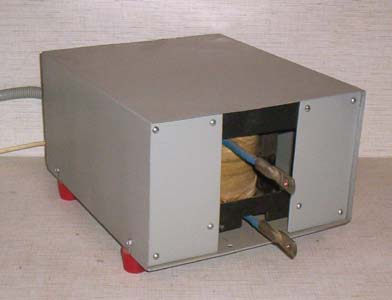
1. Введение
Для получения импульсных магнитных полей с амплитудой индукции около 1 Тл и выше в малых объемах (1 ... 10 ... 100 мм3) в ряде случаев, например, при многополюсном намагничивании малогабаритных постоянных магнитов, оказывается более предпочтительным использовать маловитковые (1 ... 10 витков) соленоиды или индукторы с индуктивностью порядка 1 ... 10 мкГн и активным сопротивлением порядка 0.001 ... 0.01 Ом. Индукция магнитного поле в центре кругового витка радиуса R с током I определяется по формуле [7]:
B = mm0 I/(2R)
Тогда, например, в центре одиночного витка диаметром 10 мм (R = 5 мм) при амплитуде тока I = 10000 А получим амплитуду магнитной индукции B ≈ 1.26 Тл. Магнитного поля такой величины вполне достаточно для намагничивания до насыщения ферритовых магнитов (феррит бария, феррит стронция и т. п.). Для намагничивания редкоземельных магнитов (состава самарий-кобальт, неодим-железо-бор) потребуется амплитуда магнитной индукции в 2 ... 3 раза больше. Таким образом, амплитуда тока в маловитковом намагничивающем индукторе должна достигать величины порядка 10000 А или более в зависимости от марки и свойств намагничиваемого постоянного магнита [8]. Поскольку генераторы мощных импульсов тока [4 - 6], особенно ударного типа [4, 5], рассчитаны на нагрузку с гораздо большим активным и индуктивным сопротивлением при максимальной амплитуде импульса выходного тока, как правило, менее 10000 А, то для их совместной работы с малоомными малоиндуктивными нагрузками, в частности, в составе установок импульсного намагничивания [11], необходимо согласующее устройство, в качестве которого может применяться импульсный трансформатор тока.
2. Конструкция импульсного трансформатора тока
Импульсные трансформаторы тока являются разновидностью электрических трансформаторов, имеющих первичную и вторичную обмотки с сильной индуктивной связью. Они могут иметь ферромагнитный сердечник (замкнутый или незамкнутый) или вовсе его не иметь (рис. 2.1 - 2.3). Для согласования малоомной малоиндуктивной нагрузки с импульсными генераторами [4 - 6] в импульсном трансформаторе тока в качестве первичной используется многовитковая обмотка, а в качестве вторичной - маловитковая обмотка, намотанная проводом с большим сечением и малым удельным сопротивлением (как правило, медным).
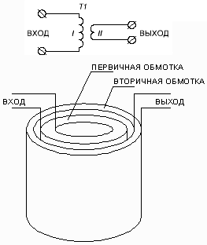
Рис. 2.1. Импульсный трансформатор тока без ферромагнитного сердечника, состоящий из первичной и вторичной обмоток в виде вложенных друг в друга цилиндрических соленоидов.
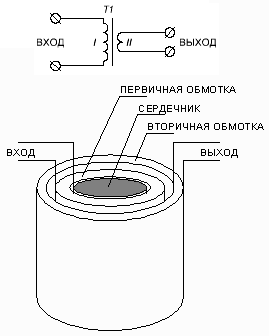
Рис. 2.2. Импульсный трансформатор тока, состоящий из первичной и вторичной обмоток в виде вложенных друг в друга цилиндрических соленоидов, внутрь которых помещен незамкнутый цилиндрический ферромагнитный сердечник.
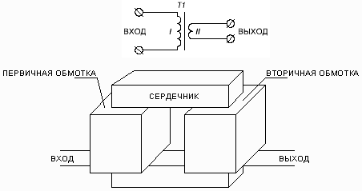
Рис. 2.3. Импульсный трансформатор тока с замкнутым О-образным ферромагнитным сердечником, на стержнях которого размещены первичная и вторичная обмотки.
3. Измерение амплитуды импульса тока
Для измерения амплитуды импульса тока большой величины может использоваться достаточно объемный проводник (участок проводника) с известным сопротивлением, к которому подключается осциллограф или пиковый вольтметр. Проводник включается в токовую цепь последовательно с нагрузкой. При этом амплитуда тока находится по амплитуде напряжения и известному сопротивлению проводника (или его участка). Сопротивление проводника может быть рассчитано, если известны его размеры и удельное сопротивлению материала, из которого он изготовлен. Формула для расчета сопротивления участка проводника произвольного сечения: R = r L/S, где - r удельное сопротивление материала проводника (Ом · м), L - длина проводника (м), S - площадь сечения проводника (м2). Формула для расчета сопротивления участка проводника круглого сечения: R = (4 r L)/(D2), где - r удельное сопротивление материала проводника (Ом · м), L - длина проводника (м), D - диаметр проводника (м). На рис. 3.4 на левом выводе катушки можно видеть участок медного провода диаметром 2.5 мм длиной 1 см, от которого сделаны отводы для подключения осциллографа или пикового вольтметра. Сопротивление этого участка составляет примерно 3.4 мОм, т. е. коэффициент преобразования ток-напряжение равен 3.4 мВ/А.
В качестве проводника с известным коэффициентом преобразования ток-напряжение может использоваться готовый токовый шунт (рис. 3.1, 3.2). Его коэффициент преобразования ток-напряжение, как правило, следует из обозначения. К измерительным выводам токового шунта может быть также подключен пиковый вольтметр или осциллограф. Пример осциллограммы, полученной с помощью токового шунта, показан на рис. 3.3.
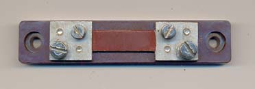
Рис. 3.1. Токовый шунт 75ШСМ3-50-0.5 с коэффициентом преобразования ток-напряжение 1.5 мВ/А.
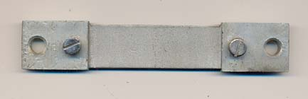
Рис. 3.2. Токовый шунт 75ШСММ3-75-0.5 с коэффициентом преобразования ток-напряжение 1 мВ/А.
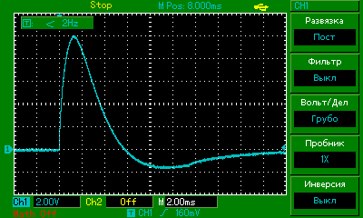
Рис. 3.3. Осциллограмма с выводов токового шунта с коэффициентом преобразования 1.5 мВ/А. Токовый импульс в режиме короткого замыкания через шунт, подключенный к импульсному трансформатору тока, который, в свою очередь, соединен с емкостным накопителем энергии 1 кДж 500 В [6]. Амплитуда положительного импульса тока достигает примерно 6600 А, длительность составляет примерно 2 мс. На осциллограмме также виден следующий за положительным импульсом тока его отрицательный выброс с существенно меньшей амплитудой.
Амплитуда импульса тока может быть рассчитана по амплитуде магнитной индукции в центре эталонной маловитковой катушки, коэффициент преобразования ток-магнитная индукция которой известен заранее. Эталонная катушка включается в токовую цепь последовательно с нагрузкой. Для измерения амплитуды магнитной индукции используется импульсный тесламетр [10]. Коэффициент преобразования эталонной катушки может быть измерен экспериментально или приблизительно рассчитан с помощью программы Coil [1]. Внешний вид эталонной маловитковой катушки показан на рис. 3.4. Катушка намотана медным проводом диаметром 2.5 мм и содержит 5 витков. Коэффициент преобразования ток-магнитная индукция примерно 200 мкТл/А. Участок обмоточного провода длиной 1 см используется для измерения амплитуды тока посредством осциллографа, подключаемого к припаянным к концам участка отводам. Помимо измерительных целей катушка также может использоваться и как генератор импульсного магнитного поля.
Рис. 3.4. Катушка для измерения амплитуды импульса тока, намотанная медным проводом диаметром 2.5 мм. Коэффициент преобразования ток-магнитная индукция в центре примерно 200 мкТл/А. Коэффициент преобразования ток-напряжение (участок провода длиной 1 см) равен 3.4 мВ/А, а напряжение-ток (для расчета амплитуды тока по амплитуде напряжения) - примерно 3000 А/В.
4. Пробный импульсный трансформатор тока
После проведения предварительных расчетов и экспериментов было принято решение строить пробный импульсный трансформатор тока по схеме с замкнутым магнитным сердечником, как обеспечивающей наилучшие условия передачи энергии из цепи первичной обмотки во вторичную за счет максимально возможной индуктивной связи. В качестве ферромагнитного сердечника для пробного импульсного трансформатора тока выбран стандартный магнитопровод броневой конструкции типоразмера ШЛ32х32 (рис. 4.1).
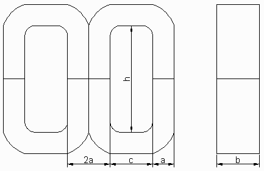
Рис. 4.1. Магнитопровод броневой конструкции. ШЛ32х32: a = 16 мм, b = 32 мм, h = 80 мм.
Обмотки намотаны на изолирующем каркасе. Вначале намотана первичная обмотка. Поверх нее с пропиткой эпоксидным компаундом намотана вторичная обмотка. Для принудительного воздушного охлаждения обмоток использован компьютерный вентилятор, подключаемый к внешнему блоку питания [2] с выходным постоянным напряжением 12 В. Электрическая принципиальная схема пробного импульсного трансформатора тока представлена на рис. 4.2. Первичная обмотка трансформатора T1 подключается к силовому кабелю с разъемом XP2, который в свою очередь соединяется с выходным разъемом генератора мощных импульсов тока [4 - 6]. Электромотор вентилятора подключается к кабелю с разъемом XP1, который соединяется с блоком питания вентилятора [2]. Выводы вторичной обмотки выходят наружу в виде клемм с винтовыми контактами (X1 и X2). Внешний вид пробного импульсного трансформатора тока показан на рис. 4.3, 4.4. Монтажные узлы со стороны первичной обмотки, на которых может присутствовать высокое напряжение, закрыты защитным кожухом.
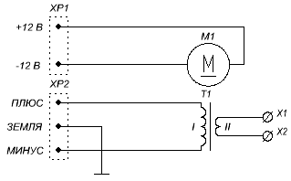
Рис. 4.2. Схема электрическая принципиальная пробного импульсного трансформатора тока.
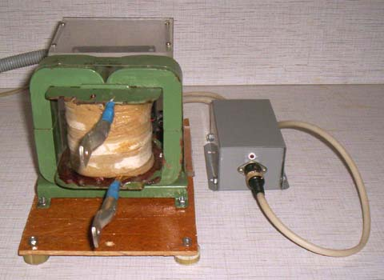
Рис. 4.3. Пробный импульсный трансформатор тока (вид спереди со стороны выходных клемм). Справа - блок питания вентилятора.
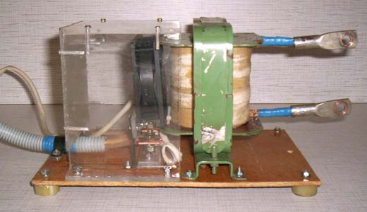
Рис. 4.4. Пробный импульсный трансформатор тока. Вид сбоку.
Испытания пробного импульсного трансформатора тока проводились в составе установки в комплекте с модифицированным однополярным генератором мощных импульсов тока [5]. Внешний вид установки показан на рис. 4.5. Для контроля амплитуды и формы импульса тока в цепи вторичной обмотки импульсного трансформатора использовался либо токовый шунт (рис. 3.1, 3.2) совместно с осциллографом, либо эталонная маловитковая катушка (рис. 3.4) совместно с осциллографом и импульсным тесламетром [10]. При работе установки в импульсном режиме от сети переменного тока напряжением 380 В частотой 50 Гц с внутренним сопротивлением 0.25 Ом [9] амплитуда выходного тока во вторичной обмотке импульсного трансформатора в режиме короткого замыкания достигала 7500 А, что существенно больше того, что может быть получено с помощью данного генератора непосредственно в импульсном режиме, близком к короткому замыканию (около 2000 А).
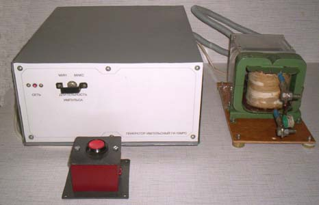 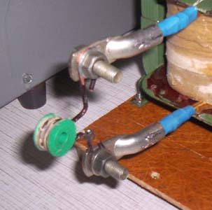
Рис. 4.5. Установка для получения импульсных магнитных полей в комплекте с однополярным генератором мощных импульсов тока [5] и пробным импульсным трансформатором тока. К выводам импульсного трансформатора тока подключена эталонная измерительная катушка (рис. 3.4) с коэффициентом преобразования примерно 200 мкТл/А.
При изготовлении и испытаниях пробного импульсного трансформатора тока был получен практический опыт работы с маловитковыми индукторами и реализована возможность получения импульсов тока большой амплитуды.
5. Импульсный трансформатор тока для практических применений (вариант 1)
На основе опыта разработки пробного импульсного трансформатора тока была создана уже вполне подходящая для практических целей конструкция импульсного трансформатора тока. Она аналогична вышеописанной в п. 4. Для увеличения уровня передаваемой мощности и, соответственно, увеличения амплитуды импульса тока в цепи вторичной обмотки, в качестве ферромагнитного сердечника применен сердечник увеличенного нестандартного типоразмера ШЛ45х45 (a = 22.5 мм, b = 45 мм, h = 85 мм, см. рис. 4.1). Электрическая принципиальная схема импульсного трансформатора тока (рис. 5.1) аналогична рассмотренной выше (п. 4, рис. 4.2) за исключением того, что блок питания вентилятора встроен непосредственно в устройство в виде отдельной печатной платы. Для выпрямления переменного напряжения служит диодный мост VD1-VD4. Конденсаторы C1C2 выполняют роль емкостного балласта, ограничивая выходной ток и, соответственно, напряжение на выходе выпрямителя. Резистор R1 служит для уменьшения броска зарядного тока конденсаторов C1C2 при включении блока питания в сеть, а резистор R2 - для их разрядки после отключения. Стабилитрон VD5 ограничивает выходное напряжение при малых токах нагрузки, конденсатор C3 выполняет роль фильтра.
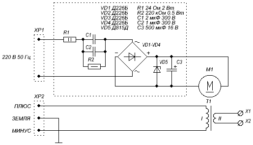
Рис. 5.1. Схема электрическая принципиальная импульсного трансформатора тока.
Все узлы импульсного трансформатора тока (собственно трансформатор, вентилятор, блок питания вентилятора) собраны в одном корпусе, закрываемом сверху защитным кожухом (рис. 5.2, 5.3). Охлаждающий вентилятор на напряжение 12 В постоянного тока смонтирован вблизи обмоток трансформатора. Для соединения с импульсным генератором используется силовой кабель с разъемом, а для подключения к сети переменного тока напряжением 220 В частотой 50 Гц - кабель с сетевой вилкой без заземления. Габариты устройства в корпусе 250 х 300 х 180 мм3 (без учета выходных клемм и кабелей подключения), масса не более 10 кг.
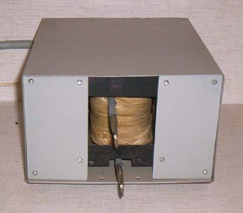
Рис. 5.2. Импульсный трансформатор тока. Вид спереди.
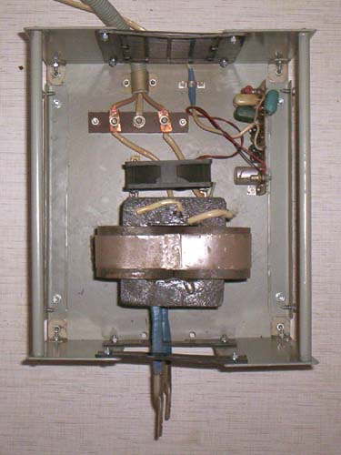
Рис. 5.3. Импульсный трансформатор тока. Вид на монтаж.
Ниже на рис. 5.4 - 5.7 показан внешний вид установок на основе импульсного трансформатора тока и различных генераторов мощных импульсов тока [5, 6].
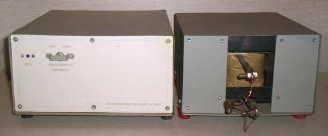
Рис. 5.4. Установка в комплекте с модифицированным однополярным генератором мощных импульсов тока [5] и импульсным трансформатором тока.
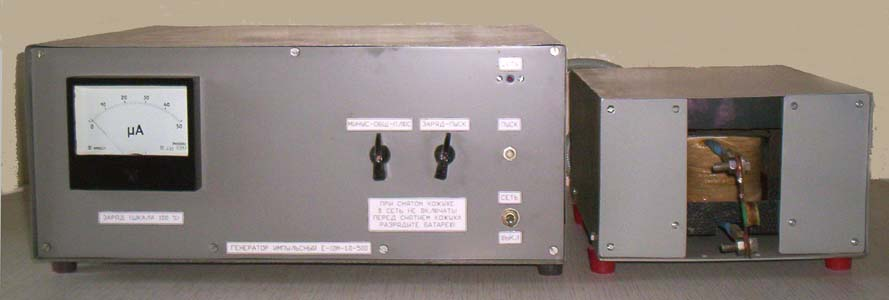
Рис. 5.5. Установка в комплекте с емкостным накопителем энергии 1 кДж 500 В [6] и импульсным трансформатором тока.
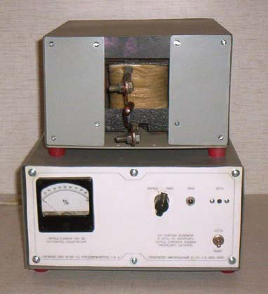
Рис. 5.6. Установка в комплекте с емкостным накопителем энергии 1 кДж 900 В [6] и импульсным трансформатором тока.
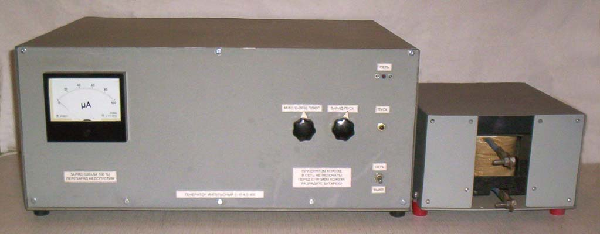
Рис. 5.7. Установка в комплекте с емкостным накопителем энергии 4 кДж 900 В [6] и импульсным трансформатором тока.
6. Применения импульсных трансформаторов тока
Импульсные трансформаторы тока с маловитковыми индукторами могут оказаться незаменимыми в установках импульсного намагничивания [11] при многополюсном намагничивании малогабаритных постоянных ферритовых и редкоземельных магнитов (например, колец диаметра порядка 10 мм для магнитных муфт счетчиков расхода воды). При использовании импульсных трансформаторов тока в установках импульсного намагничивания постоянных магнитов следует учитывать, что трансформатор вслед за импульсом тока прямой полярности (прямое намагничивающее поле индуктора) создает выброс тока обратной полярности (обратное размагничивающее поле индуктора, см. рис. 3.3). Амплитуда индукция размагничивающего магнитного поля не должна превышать определенных значений (как правило, 20 ... 25 % от амплитуды индукции намагничивающего поля), чтобы предотвратить частичное размагничивание постоянного магнита. Это достигается оптимизацией конструкции импульсного трансформатора тока и индуктора. На рис. 6.1 изображен маловитковый индуктор для одностороннего аксиального четырехполюсного намагничивания колец диаметром 10 мм, а на рис. 6.2 показан кольцевой постоянный магнит типоразмера К10х7х2, намагниченный с его помощью, и приведена визуализация магнитного поля [3] постоянного магнита (использована специальная пленка). При необходимости двухстороннего четырехполюсного намагничивания могут быть использованы два таких последовательно включенных индуктора, жестко смонтированных с обращенными друг к другу разноименными полюсами с зазором, равным высоте магнита.
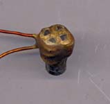
Рис. 6.1. Маловитковый индуктор для одностороннего четырехполюсного намагничивания постоянных кольцевых магнитов диаметром до 10 мм в осевом направлении.
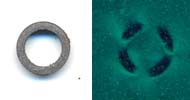
Рис. 6.2. Четырехполюсный кольцевой постоянный магнит типоразмера К10х7х2, намагниченный аксиально с одной стороны, и изображение его магнитных полюсов.
Возможно использование импульсных генераторов с импульсными трансформаторами тока для получения порошков металлов при пропускании электрических разрядов между электродами в жидкостной среде. Внешний вид установки, предназначенной для этой цели, показан на рис. 6.3. Осциллограмма токового импульса приведена на рис. 6.4.
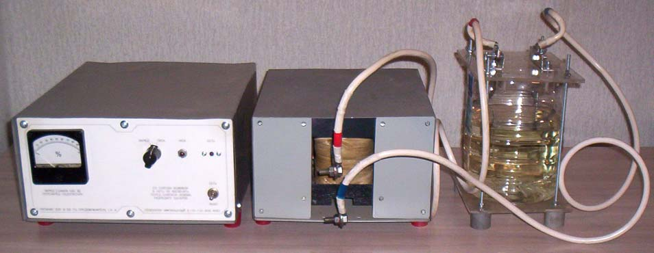
Рис. 6.3. Установка для получения порошков металлов посредством пропускания мощных электрических разрядов тока между электродами в водной среде. Комплект установки: емкостной накопитель энергии 1 кДж 900 В [6], импульсный трансформатора тока, ванна с погруженными в воду электродами.
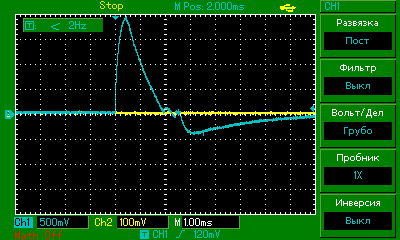
Рис. 6.4. Осциллограмма токового разряда через соприкасающиеся железные электроды в водной среде. Сигнал с выводов токового шунта с коэффициентом преобразования 1 мВ/А. Амплитуда положительного импульса тока достигает 2000 А, а его длительность составляет примерно 1 мс.
Еще одним применением импульсных трансформаторов тока (в комплекте с генераторами мощных импульсов тока) могут быть устройства для точечной импульсной сварки. Сварочные электроды, сжимающие свариваемые детали, подключаются к выходной обмотке импульсного трансформатора тока. Амплитуда сварочного тока может регулироваться уровнем заряда емкостного накопителя энергии [6] или моментом включения в сеть однополярного генератора мощных импульсов тока [5].
Ссылки:
29.11.2019
Альтернативные источники
энергии
Компьютеры и
Интернет
Магнитные поля
Механотронные системы
Перспективные
разработки
Электроника и
технология